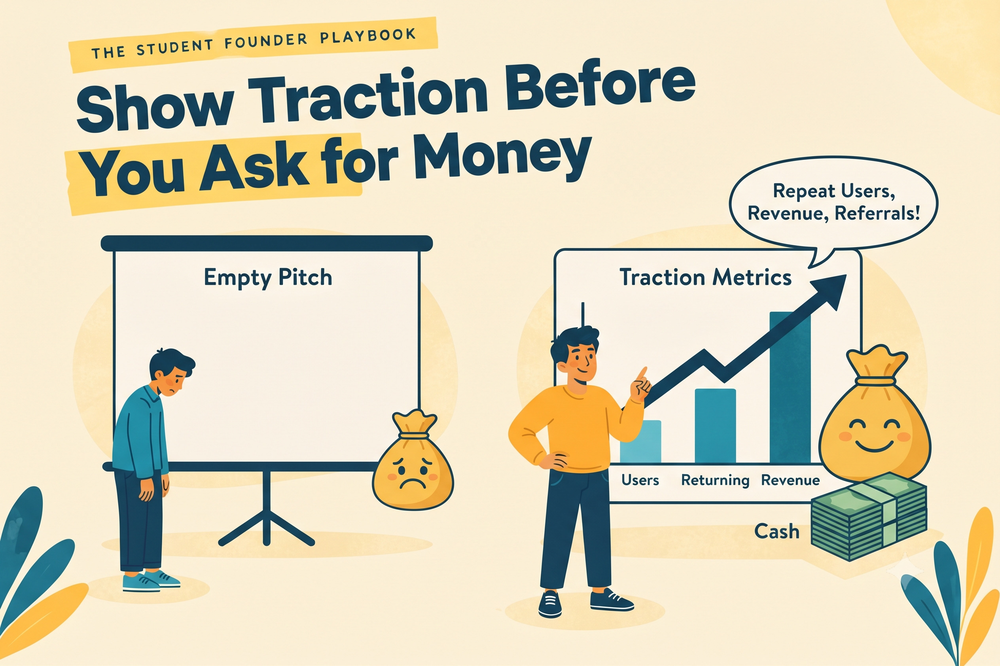

Show Traction Before You Ask for Money

EIC MBM
Published on October 5, 2026

Applying for funding or competitions before showing traction asks other people to believe in an idea that has not yet been tested.
What Traction Means
Traction is evidence that people use your product and come back to it. For a student project it does not need to be large. A small group of repeat customers, a regular weekly order, a waiting list of people who asked to be told when you launch, or testimonials from people who saw a clear result all count. What matters is the pattern rather than the size. Ten people who return every week tell you far more than a hundred people who tried the product once and disappeared.
Traction also tells you whether the problem you chose is real. People return to products that solve something for them. When they stop returning, the problem may be too minor, the first experience may be poor, or the value may be unclear. Each explanation points to a different next step, which is why traction is so useful.
Why Traction Comes Before Money
Funders, judges, and mentors want to see that a problem is real and that your solution works for at least some people. Without that evidence, they are mostly betting on your personality and your pitch. That is a risky bet, and experienced reviewers know it. With traction, you have something concrete to discuss: what you tested, what happened, and what you learned from it.
Traction also protects you. Funding received before you understand your customers can push you to build more and sell less, because money creates pressure to spend it. A small amount of real evidence makes it far easier to decide how to use funds wisely, and to recognise when a plan needs changing.
What to Track Each Week
Keep four numbers in a simple spreadsheet: how many people tried the product, how many came back a second time, how many paid, and what feedback they gave. You do not need expensive tools. A Google Sheet with four columns is enough, updated once a week with one sentence describing what changed and why you think it changed.
Read the numbers together rather than one at a time. If more people are trying the product but fewer are returning, the first experience is probably the problem. If repeat users are rising but nobody is paying, your price or the perceived value may need work. The combination tells the story that any single metric hides.
A Tutoring Example
A student ran a small tutoring service for first-year engineering students. He began with five paying students and recorded every session. Over six weeks he watched who booked a second session. Eight of his students booked again, and two referred friends without being asked. He also noted the feedback: several students said the practice problems helped far more than the lectures did.
When he applied to a college incubation programme, he did not have to claim that his idea worked. He could show the repeat bookings, the referrals, and the feedback. That evidence was far more persuasive than any pitch deck, because it described behaviour that reviewers could verify for themselves.
Vanity Numbers Are Not Traction
Likes, followers, and page views can look impressive, but they often hide the real question: did anyone receive value? A post that gathers hundreds of reactions may still produce no customers. Repeat use, payment, and referrals are harder to earn, and they are much more reliable signals. When you are tempted to celebrate a number, ask what behaviour it represents.
Presenting Traction Well
When you present traction, lead with the behaviour rather than the story. Show the weekly chart, name the number of repeat users, and explain what you changed in response. Be honest about what has not worked, because reviewers trust founders who can describe their failures precisely. Traction presented with clarity is far more memorable than traction inflated with vague claims.
Key Takeaway
Traction is behaviour that repeats. Everything else is a hopeful story.
Reflect
What number would convince you that this idea deserves more of your time?